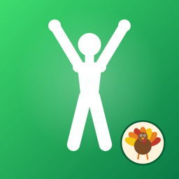

Couch to 5K for iPhone and Apple Watch, with a private group of friends cheering you on.
Run three times a week with a rest day in between. This app isn't medical advice: check with a doctor before starting a new exercise program, and stop if you feel pain or dizziness.
Do I need an Apple Watch? No. With one, you can start a session from the C25K Friends app on your Watch for wrist taps instead of voice cues. If it's not on your Watch: iPhone Watch app → My Watch → Available Apps → Install.
Voice cues stop when my screen locks. Allow location: Settings → Privacy & Security → Location Services → C25K Friends → While Using the App.
The voice sounds robotic. Download a nicer voice: Settings → Accessibility → Read & Speak → Voices → English → pick one marked Enhanced or Premium. The app uses it automatically.
Runs don't show in Apple Health. Settings → Health → Data Access & Devices → C25K Friends → turn on all.
A session felt too hard / too easy. Plan tab → Repeat Week to do a week again, or Skip Week to move on.
Can friends see my distance? Only if you turn on Group tab → Share my run distance. Heart rate, routes and Apple Health data are never shared.
Someone's being unkind. Tap ••• next to their name to report or block them.
How do I delete my friends data? Group tab → Delete my Friends data.
Questions, bug reports, or a problem with someone in your group? Email gabe@mobiusa.com. We reply within a few days and act on reports within 24 hours.
Read the privacy policy.